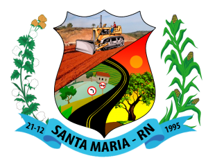

Fui criado em Santa Maria, interior do RN. Mesmo morando em cidade pequena, descobri a tecnologia bem cedo, onde me apaixonei por computadores e afins.

De 2016 até 2019 fiz meu Ensino Médio no IFRN e hoje sou Técnico em Edificações.
Foi um período onde aprendi muito sobre a área da construção civil e sobre vida, também!
JÁ NA UFRN